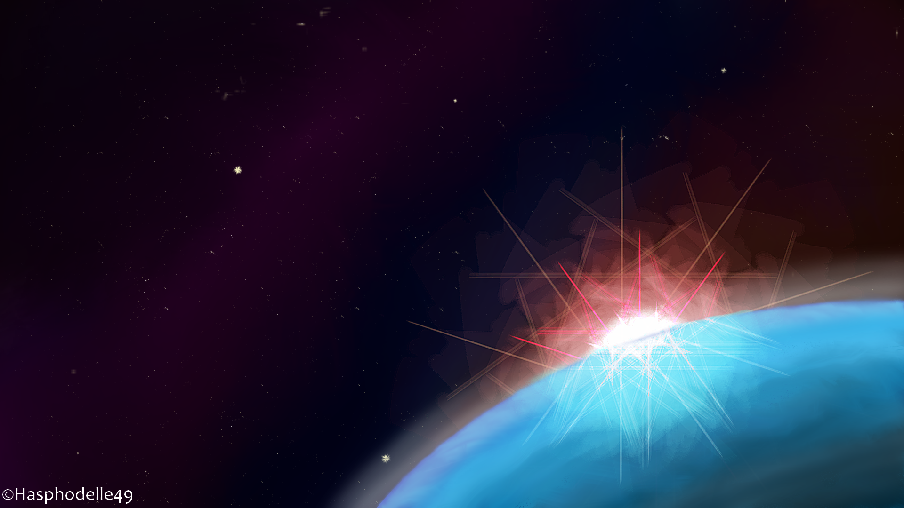
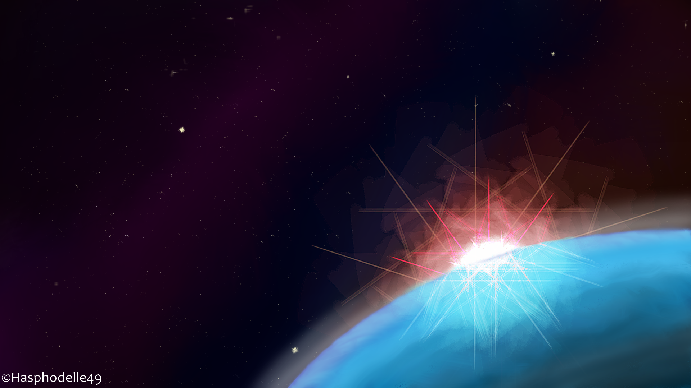
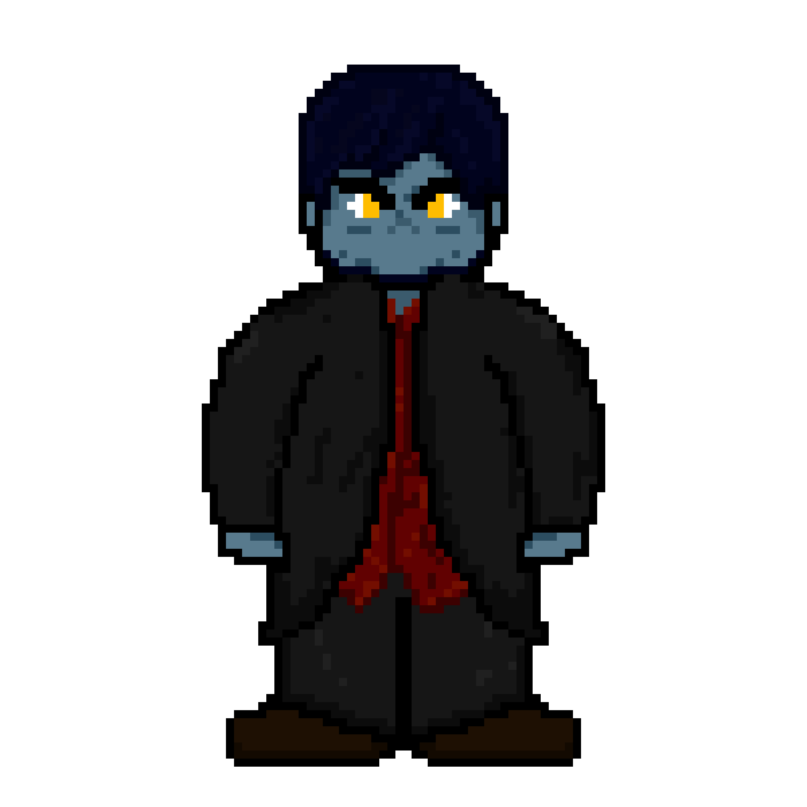

Little adventuress


► Je dessinais sur le numérique, encore récemment à l'aide d'une tablette graphique Huion H610 pro V1, puisque aujourd'hui c'est à l'aide de la tablette à écran XP-Pen Innovator 16.
• Derniers dessins réalisés :
• Dessins réalisés dans le cadre d'un projet d'arts visuels en classe de Seconde :
• Autres dessins réalisés :
► Depuis que mes histoires se font plus concrètes malgré les diverses modifications que j'y apporte à longueur de temps, j'ai souhaité de plus en plus illustrer mes idées en réalisant au moins les personnages. C'est pourquoi avec chaque résumé des histoires, j'accompagne également les personnages et, si je les ai dessinés, les paysages.
Une classe se retrouve après une longue et étrange séparation à bord d’un vaisseau extraterrestre. Persuadés que la Terre est détruite, ils vivent tant bien que de mal leur nouvelle vie surveillée de près.
La plupart de leurs faits et gestes sont observés. Ils ne savent rien de ce qu’il se passe en dehors du vaisseau, et sont plus solidaires que jamais.
Mais une seule élève n’est plus pareille. Quelque chose l’a changée. Avant, elle était souriante, joyeuse, maintenant, elle n’est plus qu’un visage blanc comme le marbre n’affichant plus aucune expressions. Restant muette face aux questions et à l’inquiétude de ses camarade, elle reste à l’écart, fascinée par l’immensité de l’espace que le vaisseau sillonne…
• Blasons des planètes dessinés à ce jour :
• Personnages dessinés à ce jour :


• Autres dessins de la même histoire :
 

Dans notre monde, un établissement scolaire se démarque des autres. Connu pour abriter les enfants de magiciens, ainsi que certains nommés Voyageurs, il forme ces jeunes gens aux périples de la vie lorsque l’on possède des pouvoirs. Ce monde magique, est régit par quatre clans, dont celui des Abysses est le chef suprême. Ils supervisent deux établissements de magie, dont un lycée situé à Saumur, composé de magiciens et de sans-magie. Un établissement mixte.
Loin de là, dans d’autres époques, vagabonde illégalement une bande de gamins surmontés tous de la même casquette, et semblent tout droit sortis d’une vieille usine. C’est le cas.
Parmi eux, la seule jeune fille du groupe, à l’aube de ses dix-sept ans, possède la magie du voyage temporel. Les régisseurs de la magie, qui ne souhaitent pas d’écart en matière de magie, et de son côté, Eléonore menaçe parfois l’ordre logique des choses, est l'une des cibles du clan. Alors qu’elle est recherchée dans toutes les époques, la jeune fille décide de se jeter dans la gueule du loup et d’intégrer le lycée de magie de Saumur. Elle se considérera alors plus maligne que les autres, sachant certaines choses, supposées disparues depuis longtemps…

• Personnages dessinés à ce jour (oui il y en a beaucoup d'autres eheh) :

• Autres dessins de la même histoire :

- Retourner en haut de la page
Le projet, lourd, conséquent, mais qui nous tient à coeur, possède comme pilier l'histoire de Blue Bird expliquée plus haut dans la rubrique L'écriture. En effet, cette histoire tend à s'adapter en jeu vidéo de type Role Play Game, abrégé en RPG. Réalisé sous Python à l'heure actuelle, il est aujourd'hui en suspend afin d'être prochainement recodé sous le langage C++
► On remarque effectivement qu'il n'y a pas grand chose pour le moment, en terme d'histoire ou bien de déplacement mais cela reste un début prometteur !
• Entre autre, voici donc Céleste, le personnage principal :

• Ainsi que le personnage du Grand Maitre, pas encore ajouté dans le jeu :
► Les personnages sont destinés eux aussi à être refaient dans un furur proche (leurs sprites, je veux dire, parce qu'entre Céleste dont on a l'impression qu'elle glisse sur le sol plus qu'elle ne marche et danse le french cancan sur le côté, bon.)
Pour le moment, on ne compte que deux musiques réalisées, il est vrai que cela est peu, mais plusieurs facteurs en ont décidés ainsi. De plus, il n'y en a malheureusement pas de nouvelles prévues
à ce jour, donc il faudra se contenter de cela (｡•́︿•̀｡)
D'autre part, l'existence de musiques (même s'il n'y en a que deux ;-;) permet tout de même d'avoir un aperçu de ce que cela peut donner, ainsi qu'une petite mise dans l'ambiance (✿◠‿◠)/
• Musique destinée normalement au menu
• Musique destinée normalement aux couloirs